Guide de l'intégrateur
AITE — Restaurant, stock, achats, Direction
Installer, paramétrer et vérifier chez le client, sans rien oublier
Installer, paramétrer et vérifier chez le client, sans rien oublier
| Public visé | Intégrateur junior (AITE ou partenaire) qui met en service le restaurant AITE et ses tableaux de bord chez un client. Aucune expérience d'Odoo n'est supposée ; savoir déposer un dossier sur le serveur et redémarrer Odoo suffit. |
|---|---|
| Modules | aite_house_restaurant (tout installer) · aite_pos_restaurant 18.0.1.0.8 · aite_pos_credit 18.0.2.0.6 · aite_pos_analytics 18.0.2.1.6 · aite_pos_analytics_hr 18.0.1.0.0 · aite_resto_carte_messager 18.0.1.3.1 · aite_stock_dashboard 18.0.1.1.3 · aite_purchase_dashboard 18.0.1.0.5 · aite_direction_dashboard 18.0.1.1.2 · aite_exec_dashboard 18.0.1.1.2 (hôtel) — et les modules Odoo Point de Vente, Inventaire, Achats |
| À utiliser avec | Les scénarios de l'intégrateur (AITE_Scenarios_Integrateur.pdf et son classeur .xlsx) : chaque chapitre de ce guide y renvoie. Pour les gestes de la salle : AITE_Guide_Restaurant.pdf. |
| Éditeur | AITE CONSULTING — Novembre 2026 — Odoo 18 Community et Enterprise |
Les trois règles de l'intégrateur — (1) on ne travaille jamais d'abord sur la base de production : une copie ou une base neuve ; (2) on ne retire jamais le dossier d'un module installé, et on ne désinstalle jamais « pour réinstaller propre » ; (3) après chaque installation ou mise à niveau, on recharge les navigateurs (Ctrl+Maj+R) et on relit le journal d'Odoo : aucune ligne ERROR.
| Module (nom dans Apps) | Ce qu'il apporte | Dépend de |
|---|---|---|
AITE HOUSE — Restaurant (tout installer)aite_house_restaurant | Rien par lui-même : il installe les quatre modules du restaurant ci-dessous et, sur Odoo Enterprise seulement, l'écran de cuisine (pos_preparation_display), aussi à chaque mise à niveau s'il manque. | les quatre modules suivants |
AITE — Restaurant (service à table)aite_pos_restaurant | La caisse au service à table contrôlé : code personnel à 4 chiffres, quatre niveaux, plan verrouillé, personnes à table, annulations sous code avec motif, couleurs des tables, refus des produits épuisés ; menus Restaurant → Annulations, Personnes et tables, Motifs d'annulation. | Point de Vente, Restaurant (pos_restaurant), Employés au Point de Vente (pos_hr) |
AITE — Crédit clients (Ardoises POS & Ventes)aite_pos_credit | L'ardoise : née d'une addition réglée avec le mode « Ardoise client », réservée au manager en restaurant ; menu POS Crédit (Recouvrement, Ardoises, Remboursements). | Point de Vente, Ventes, Facturation |
AITE — POS Analytics (LAVERANDAH)aite_pos_analytics | L'analyse des ventes : chiffre d'affaires, marge, CMV, familles sur trois niveaux, caisses, sessions, écarts de caisse ; menu Point de Vente → Analyse → Analyse AITE. Le nom vient du client pilote. | Point de Vente, Facturation |
AITE — Analyses du restaurant par employéaite_pos_analytics_hr | Passerelle : « Serveur » et « Encaissée par » dans l'analyse ; s'installe seule quand les deux modules précédents sont là. | les deux précédents |
AITE — Carte du restaurant Le Messager (démonstration)aite_resto_carte_messager | Données de démonstration : salle de 12 tables, équipe fictive aux quatre niveaux, trois comptes Odoo avec courriel, 101 produits en familles, coûts et stocks des boissons. Bouton « Poser la carte Le Messager ». Jamais en production. | tout installer |
AITE — Stock & Inventaire (Tableau de bord)aite_stock_dashboard | Menu Inventaire → Tableau de bord AITE : valeur du stock, alertes et quantités à commander, rotation et dormants, écarts d'inventaire et coulage. | Inventaire |
AITE — Achats & Fournisseurs (Tableau de bord)aite_purchase_dashboard | Menu Achats → Tableau de bord AITE : dettes et échéancier, ponctualité (OTIF), prix d'achat, consignes de casiers. | Achats, Facturation |
AITE — Direction (vue consolidée)aite_direction_dashboard | Menu Direction : le cockpit du gérant, qui reprend les quatre tableaux précédents (mêmes chiffres) et ajoute le cash à risque, la position clients/fournisseurs et la liste « À traiter ». | POS Analytics, Crédit clients, Stock, Achats |
AITE — Direction (activité par pôle)aite_exec_dashboard | L'activité par pôle d'un complexe hôtelier (Hôtel → Activité par pôle) : hébergement, restauration, prestations, RevPAR. Il installe le socle hôtelier : jamais chez un restaurant seul. | Point de Vente, socle hôtelier, Espaces & prestations |
À savoir — dans Apps, une recherche « Direction » montre deux cartes « AITE — Direction ». Chez un restaurant, on active « AITE — Direction (vue consolidée) » ; « (activité par pôle) » est réservée aux clients qui ont l'hôtel AITE (voir les cas K01 à K04, écartés des scénarios).
| Élément | Ce qu'il faut |
|---|---|
| Odoo | Odoo 18, Community ou Enterprise, à jour (une version récente de la branche 18.0). Une version plus ancienne d'Odoo 18 a provoqué « order.getCommand is not a function » à la caisse : corrigé dans aite_pos_restaurant 18.0.1.0.7 ; livrer la 18.0.1.0.8 ou plus récente. |
| Édition | Tout fonctionne sur Community. Seul l'écran de cuisine est réservé à Enterprise : « tout installer » l'ajoute s'il trouve le module sur le serveur, sinon il ne fait rien. |
| Python, base de données | Python 3.10 à 3.12 (celui d'Odoo 18), PostgreSQL ; un accès au serveur pour déposer les dossiers et redémarrer le service. |
| Où déposer les modules | Dans le répertoire des modules personnalisés déclaré dans addons_path du fichier odoo.conf ; chaque dossier aite_* à côté des dossiers existants. Ne jamais remplacer le répertoire entier. |
| La société | Pays et plan comptable chargés (Odoo exige un journal de banque pour créer une caisse) ; devise XAF (FCFA) avant toute écriture : Odoo refuse ensuite de la changer. Le plus sûr : créer la base par l'écran de création d'Odoo, pays Cameroun, langue Français. |
| Postes et tablettes | Un navigateur récent (Chrome ou Edge) ; une tablette par poste de salle, connectée avec le compte de la caisse ; réseau Wi-Fi stable (la caisse vend hors connexion, mais n'annule ni ne ferme sans réseau). |
/web/database/manager, en anglais) : « Database Name », « Language » Français, « Country » Cameroun, « Demo Data » décoché, puis « Create database ». La société naît en FCFA, avec le plan comptable camerounais. Ne pas lancer le scénario « Restaurant » qu'Odoo propose sur un Point de Vente vide.addons/ à côté des autres, puis redémarrer le service Odoo.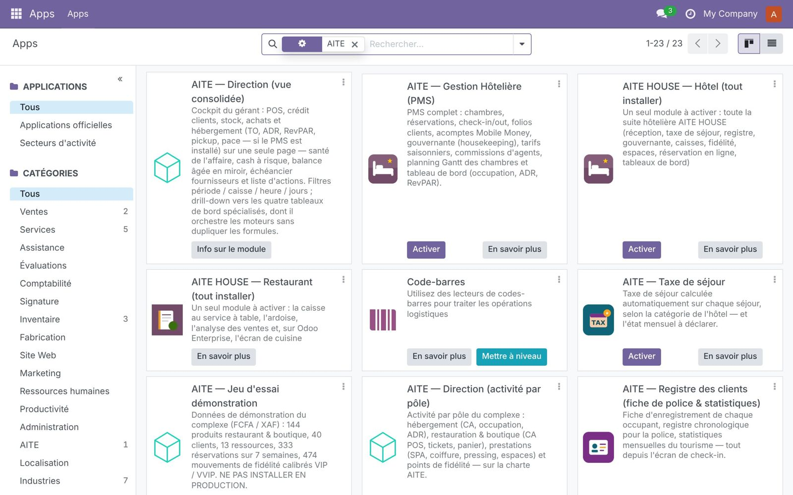
En ligne de commande, c'est équivalent à odoo-bin -c <odoo.conf> -d <base> -i aite_house_restaurant,aite_direction_dashboard --stop-after-init. Lire ensuite le journal : aucune ligne ERROR. Scénarios : I01, I03.
Ce que l'installation règle seule. Une caisse « Restaurant » (modes Espèces et Mobile Money, salle « Salle » avec une table), la case « Service à table contrôlé » cochée, les cinq motifs d'annulation (Erreur de saisie, Client parti, Plat refusé, Produit manquant, Autre). Une caisse créée ensuite (un bar) reçoit ses propres Espèces (« Espèces Bar ») et Mobile Money. Une caisse qui existait déjà n'est jamais modifiée.
Sur une base de démonstration seulement : Apps → chercher « Messager » → « AITE — Carte du restaurant Le Messager (démonstration) » → Activer. Il installe « tout installer » s'il ne l'est pas, puis pose la salle de 12 tables, l'équipe et la carte. Le menu Point de Vente → Configuration → Poser la carte Le Messager la repose à la demande et dit ce qu'il a fait ; rejoué, il ne crée rien deux fois.
| Équipe fictive (code) | Comptes Odoo (mot de passe = identifiant, à changer) |
|---|---|
| Serveurs Brice 1001, Nadège 1002, Loïc 1003 ; caissières Clarisse 2001, Prisca 2002 ; chef de salle Hervé 3001 ; manager Sandrine 4001 | caisse (la tablette), manager, chef (lecture des rapports) — chacun avec une adresse e-mail de démonstration (…@restaurant.example), à remplacer |
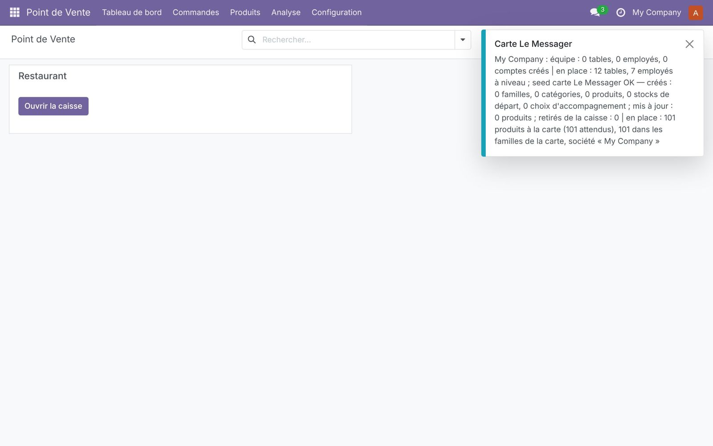
filestore ; fermer toutes les caisses.-u aite_house_restaurant,aite_direction_dashboard.Règle d'or — ne jamais retirer les fichiers d'un module installé : Odoo ne trouve plus ses vues (« champ … is undefined ») et la base se bloque. Pour enlever un module : Apps → Désinstaller d'abord (en sachant qu'on perd ses données), retirer le dossier ensuite.
Ordre conseillé : réglages de la caisse (administrateur), comptes Odoo, équipe, salle, carte, stock de départ. Scénarios B01 et B02.
Point de Vente → Configuration → Paramètres → choisir la caisse → bloc Restaurant. Chaque réglage dit sous lui ce qui va se passer.
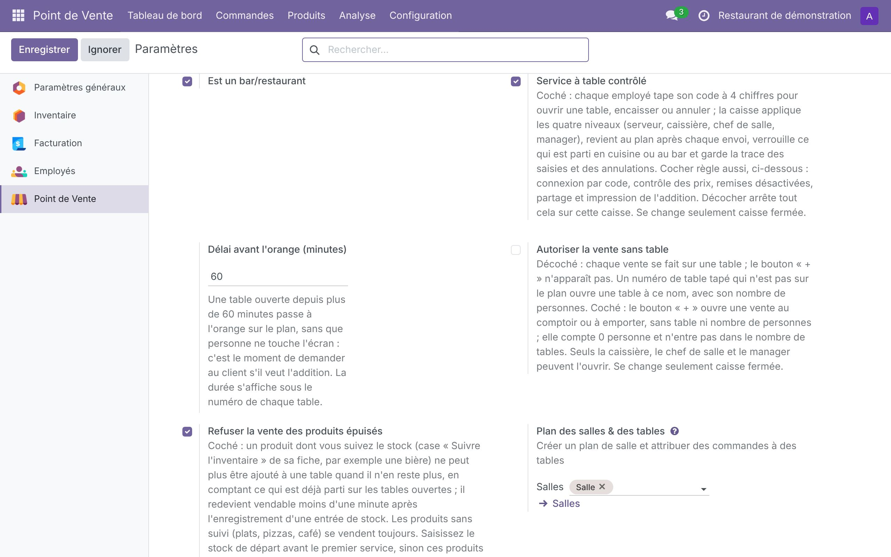
Paramètres → Utilisateurs & Sociétés → Utilisateurs → Nouveau. Les employés de salle n'ont pas de compte : ils ont un code.
| Compte | Droits à donner (onglet « Droits d'accès ») | Pourquoi |
|---|---|---|
| la caisse (chaque tablette) | Point de Vente : Utilisateur ; Comptabilité : Facturation ; une « Adresse e-mail » | sans Facturation, les entrées et sorties d'espèces sont refusées ; sans courriel, la validation d'un paiement échoue (écran 4). Jamais Administrateur. |
| le manager du restaurant | Point de Vente : Administrateur ; Employés : « Gestionnaire : Gérer tous les employés » ; Comptabilité : Facturation ; POS Analytics AITE : « Manager — Analyses POS » ; POS Crédit : Utilisateur ; courriel | les niveaux et codes des employés ; sans Facturation, Odoo refuse le rapport de session dès qu'une vente est payée ; POS Crédit pour ouvrir Direction (§8) |
| le chef de salle qui lit les rapports | Restaurant AITE : « Restaurant : lecture des rapports », rien d'autre | il lit les annulations sans accès à la caisse |
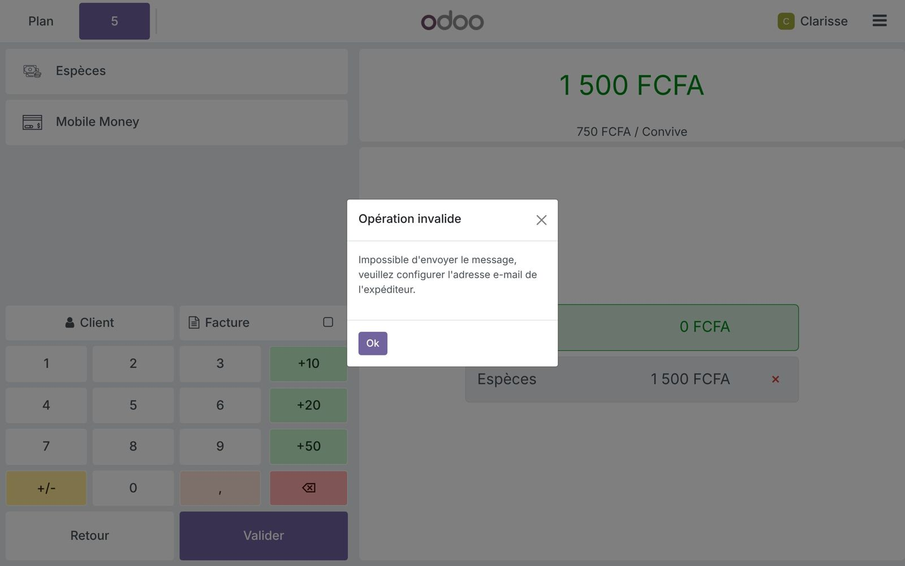
Employés → Nouveau (compte manager) : le nom, puis dans le groupe « Caisse du restaurant » le « Niveau en caisse » (Serveur, Caissière, Chef de salle ou superviseur, Manager). Le « Code caisse » (4 chiffres) est proposé d'office. Aucun courriel. Un code déjà pris est refusé sans dire à qui il est ; un employé sans niveau n'apparaît pas à la caisse ; un employé parti s'archive.
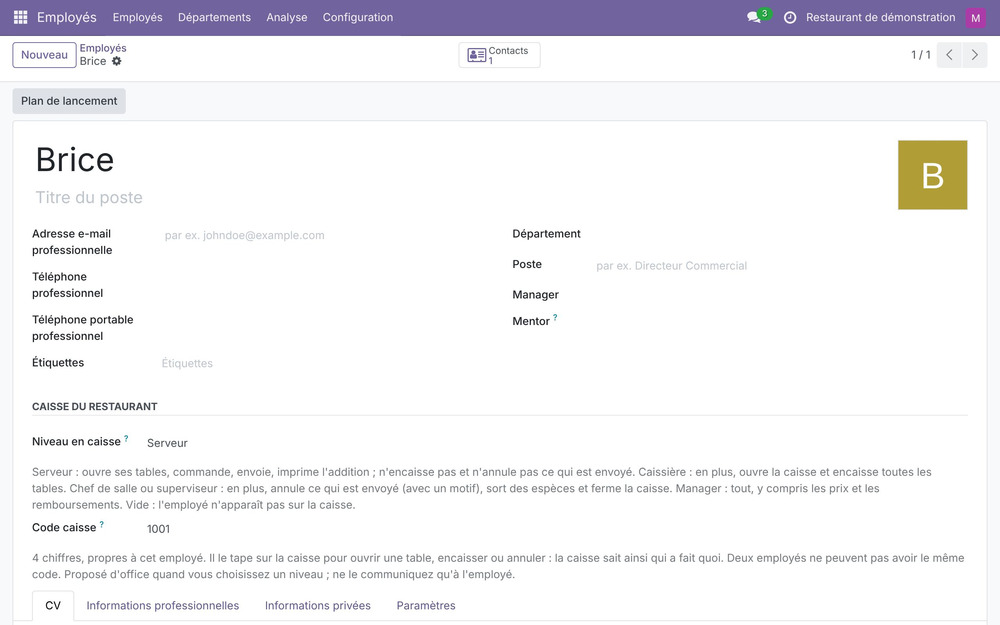
Le suivi se fait dans POS Crédit → Recouvrement ; une ardoise se rembourse par Enregistrer un remboursement (« Montant à encaisser », « Moyen de paiement » : Espèces, MTN Mobile Money, Orange Money…). Scénarios C01 à C03.
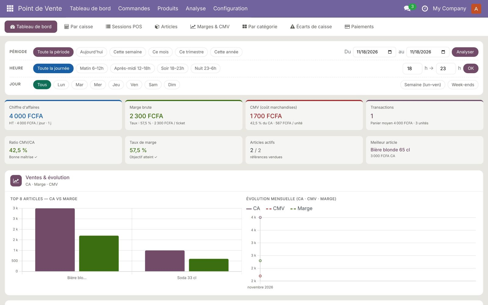
Odoo crée un entrepôt (nom court WH) avec l'emplacement WH/Stock, d'où la caisse vend. Pour suivre une cave et un bar séparés : Inventaire → Configuration → Paramètres → cocher « Emplacements de stockage » ; puis Configuration → Emplacements → Nouveau (« Emplacement parent » WH, « Type d'emplacement » « Emplacement interne »). Les déplacements se font par Opérations → Transferts (« Transferts internes »). Attention : la caisse ne vend que depuis l'emplacement de son type d'opération ; une boisson déplacée ailleurs devient « épuisée » pour elle.
| Alertes AITE (tableau de bord) | Règles de réapprovisionnement d'Odoo | |
|---|---|---|
| Où | Paramètres → AITE Stock (valeurs de la société) ; fiche produit, onglet « Réappro AITE » ; bouton « ⚙ Configurer les alertes » | Inventaire → Opérations → Réassort (« Quantité min », « Quantité max ») ; le produit doit avoir la route « Acheter » et un fournisseur |
| Ce qu'elles font | Classent chaque boisson Rupture, Critique, Sous seuil, OK ; calculent « À commander » d'après les ventes des 30 derniers jours | Proposent des demandes de prix aux fournisseurs |
| Conseil | À régler pour tous les clients (valeurs d'office : sécurité 2 j, horizon 7 j, critique 3 j, dormant 60 j, délai 3 j, coulage 2,0 %) | Facultatif : seulement si le client veut des commandes proposées automatiquement |
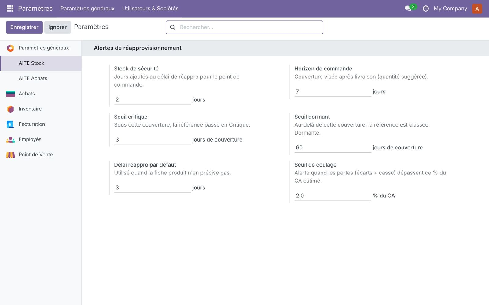
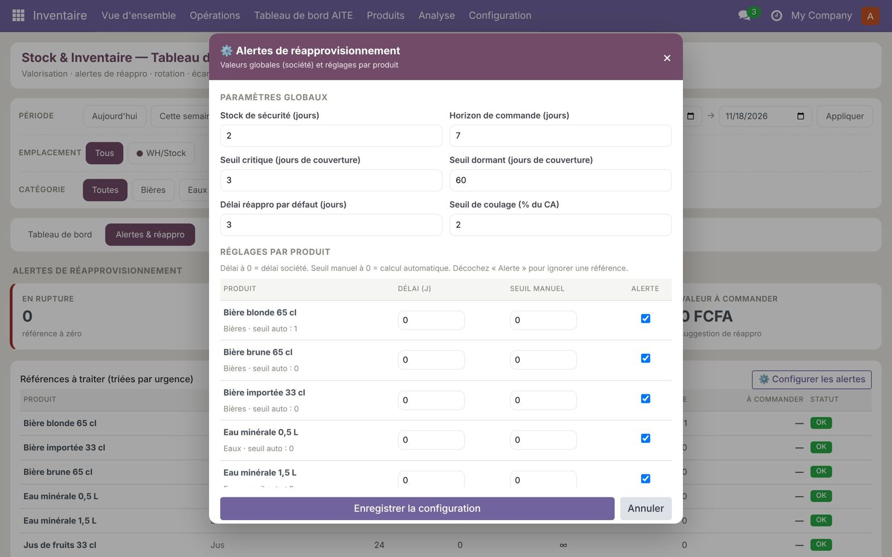
Sur la fiche produit, onglet « Réappro AITE » : « Délai réappro (jours) » à 0 = délai de la société ; « Seuil manuel (point de commande) » à 0 = calcul automatique ; « Alerte de réappro active » décochée = produit ignoré.
À savoir — le stock de départ saisi ainsi est un ajustement d'inventaire : le premier mois, « Écarts d'inventaire (période) » et « Écart net » sont gonflés. Le coulage, lui, ne lit que les écarts négatifs et la casse. Prévenir le client.
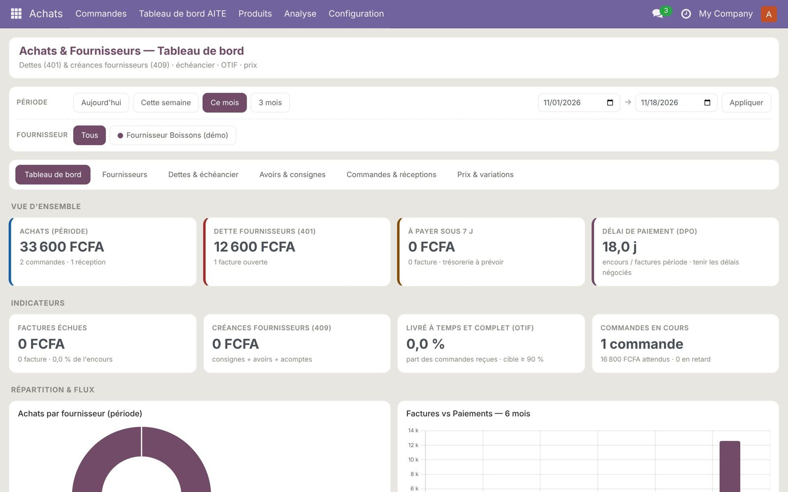
| Tableau | Droits pour l'ouvrir | Ce que lisent les indicateurs |
|---|---|---|
| Analyse AITE Point de Vente → Analyse | POS Analytics AITE : Utilisateur ou Manager | Commandes de caisse payées ou facturées : « Chiffre d'affaires » (HT), « CMV (coût marchandises) » = quantités × « Coût », « Marge brute » = CA − CMV, « Transactions », « Panier moyen ». |
| POS Crédit — Recouvrement | POS Crédit : Utilisateur | « Encours total (dû) » = reste dû des ardoises ouvertes ; « Recouvré (période) » = remboursements ; « Taux de recouvrement » = recouvré / (encours + recouvré) ; balance âgée par date d'ouverture. |
| Stock & Inventaire Inventaire → Tableau de bord AITE | Inventaire : Utilisateur (le bouton ⚙ et les réglages : Administrateur) | « Valeur stock — coût d'achat » = quantités des emplacements internes × « Coût » ; « Ventes/j » = sorties vers les clients des 30 derniers jours ; « Couverture » = stock / ventes par jour ; « Point de cmde » = ventes/j × (délai + sécurité) ; « À commander » = ventes/j × (délai + horizon) − stock ; « Pertes (écarts négatifs + casse) » ; « Coulage » = pertes / « CA estimé » (sorties × prix de vente). |
| Achats & Fournisseurs Achats → Tableau de bord AITE | Achats : Utilisateur (⚙, réglages, consignes : Administrateur) | « Achats (période) » = commandes confirmées ; « Dette fournisseurs (401) » = factures fournisseurs comptabilisées non soldées ; échéancier par « Date d'échéance » ; « Livré à temps et complet (OTIF) » = reçu à l'heure et complet ; « Créances fournisseurs (409) » = consignes + avoirs + acomptes ; « Prix & variations » = lignes d'achat des 45 derniers jours contre celles d'il y a 4 à 7 mois. |
| Direction (vue consolidée) | Point de Vente : Administrateur ; POS Analytics AITE ; POS Crédit : Utilisateur ; Comptabilité : Facturation (sinon « Erreur d'accès », écran 11) | Les mêmes moteurs que les quatre tableaux (mêmes chiffres). En plus : « Cash à risque » = ardoises de plus de 30 jours + pertes du stock ; « Crédits clients − dettes fournisseurs » ; « À traiter ». Cartes « période » (suivent les filtres) et « photo » (instantanés : encours, dettes, stock). Caisse, heure et jours ne filtrent que les ventes. |
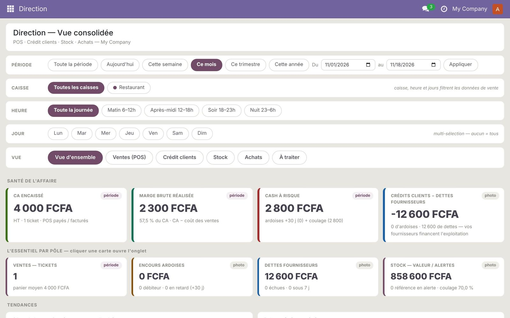
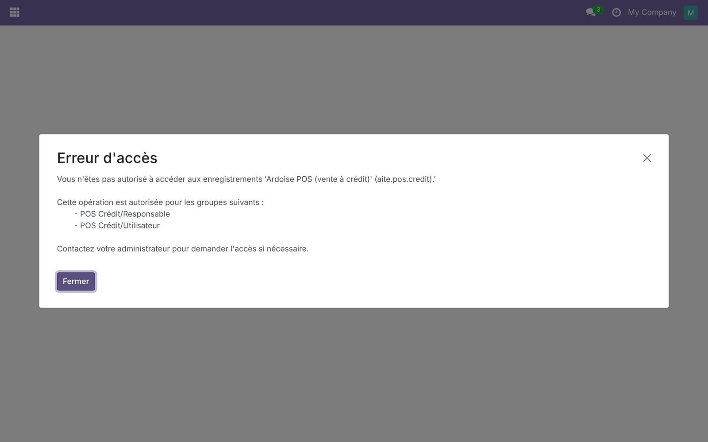
Un tableau de bord vide n'est pas une panne : soit il n'y a rien sur la période (changer la période), soit le compte n'a pas le droit (un message « Erreur d'accès » le dit), soit les données de base manquent (pas de « Coût », pas de facture comptabilisée, pas de vente depuis 30 jours).
| Profil (compte Odoo) | Caisse | Employés, carte, salle | Restaurant → Annulations | Analyse AITE | POS Crédit | TdB Stock | TdB Achats | Direction |
|---|---|---|---|---|---|---|---|---|
| Tablette de la caisse | oui | non | non | non | non | non | non | non |
| Chef de salle (rapports) | non | non | oui | non | non | non | non | non |
| Manager du restaurant (§4.2) | oui | oui | oui | oui | oui | oui | non* | oui |
| Magasinier (Inventaire : Utilisateur) | non | non | non | non | non | oui | non | non |
| Acheteur (Achats : Utilisateur) | non | non | non | non | non | non | oui | non |
| Administrateur (intégrateur) | oui | oui | oui | oui | oui | oui | oui | oui |
* Ajouter Achats : Utilisateur au manager s'il gère les fournisseurs. Les gestes en salle (encaisser, annuler, fermer…) ne dépendent pas du compte Odoo mais du niveau de l'employé qui tape son code : voir le tableau des droits du guide du restaurant.
À cocher sur la base de production, la veille du premier service (les scénarios détaillés sont dans le cahier de l'intégrateur).
| Symptôme | Cause | Solution |
|---|---|---|
| « Opération invalide » : « Impossible d'envoyer le message, veuillez configurer l'adresse e-mail de l'expéditeur. » à la validation, à l'ouverture ou à la fermeture | Le compte Odoo connecté (souvent celui de la tablette) n'a pas d'adresse e-mail : Odoo écrit à son nom | Paramètres → Utilisateurs → le compte → « Adresse e-mail » ; puis valider de nouveau. La carte « Le Messager » 18.0.1.3.1 pose des courriels de démonstration. |
| « Oups ! » avec « order.getCommand is not a function » en touchant l'onglet d'une part (« 1B ») | Version d'Odoo 18 plus ancienne que celle du module | Mettre à niveau aite_pos_restaurant en 18.0.1.0.8 (corrigé dès 18.0.1.0.7) ; idéalement mettre Odoo 18 à jour ; recharger la tablette. |
| Une part divisée (« 6B ») est introuvable sur le plan | Une part n'a pas de table | ≡ → « Commandes », code de la caissière : la part est dans la liste. En 18.0.1.0.8, la caisse reste sur la part après « Addition ». |
| La carte de démonstration n'apparaît pas | Module déposé sans mise à niveau, plan comptable absent, ou pas de caisse au service à table contrôlé | Apps → « AITE — Carte du restaurant Le Messager » → « Mettre à niveau », ou Point de Vente → Configuration → « Poser la carte Le Messager » : la notification dit ce qui manque. |
| Un produit n'apparaît pas à la caisse | Case « Point de Vente » décochée, pas de catégorie du PdV, ou la tablette a chargé les produits avant | Corriger la fiche ; puis recharger la caisse (fermer et rouvrir l'onglet, Ctrl+Maj+R). |
| « Produit épuisé » sur une bouteille bien présente | Stock non saisi ou déjà parti sur des tables ouvertes | Le manager enregistre l'entrée de stock (« Mettre la quantité à jour ») : la vente repasse en moins d'une minute. |
| Pas d'écran de cuisine | Odoo Community : l'écran de cuisine est réservé à Enterprise | Comportement normal ; utiliser les « Imprimantes de préparation ». Sur Enterprise : « Mettre à niveau » « tout installer ». |
| Tableau de bord vide | Pas de données sur la période, ou droits manquants | Changer la période ; vérifier les droits (§8, §9) ; vérifier les « Coût », factures comptabilisées, ventes. |
| « Erreur d'accès » … « Ardoise POS (vente à crédit) » (aite.pos.credit) en ouvrant Direction | Le compte n'a pas POS Crédit | Donner POS Crédit : Utilisateur au compte. |
| Marges à 100 %, CMV nul | « Coût » vide sur les produits | Renseigner le « Coût » (boissons) ; les plats sans coût restent à 100 %. |
| « Service à table contrôlé » grisé | Une session de la caisse existe (même « Contrôle à l'ouverture ») | Régler la case avant la première ouverture ; sinon voir AITE. |
| Écran blanc ou ancien comportement après une mise à niveau | Cache du navigateur | Ctrl+Maj+R ; sur tablette, fermer et rouvrir l'onglet. |
| « champ aite_… is undefined » sur Paramètres | Dossier d'un module installé absent du serveur | Redéposer le dossier, redémarrer, « Mettre à jour la liste des Apps ». |
En cas de blocage, transmettre à AITE les lignes ERROR ou Traceback du journal d'Odoo, le contenu d'addons_path, la version des modules (Apps, vue Liste) et une capture de l'écran.
addons_path (dans odoo.conf) liste où Odoo les cherche.-u).| Pour… | Faire |
|---|---|
| Installer en ligne de commande | odoo-bin -c <odoo.conf> -d <base> -i aite_house_restaurant,aite_direction_dashboard --stop-after-init |
| Poser la démonstration | … -i aite_resto_carte_messager --stop-after-init (base de démonstration seulement) |
| Mettre à niveau | … -u aite_house_restaurant,aite_direction_dashboard --stop-after-init, après sauvegarde et caisses fermées |
| Contrôler le journal | Chercher ERROR et Traceback dans le journal d'Odoo après chaque installation ou mise à niveau |
| Sauvegarder une base | Écran de gestion des bases d'Odoo (/web/database/manager, bouton « Backup », avec le filestore) |
| Recharger un poste | Ctrl+Maj+R ; sur tablette, fermer l'onglet de la caisse et le rouvrir |
| Recetter | AITE_Scenarios_Integrateur.pdf et son classeur .xlsx (36 scénarios, cas D, F, H, I, J, R du cahier de recette) |
| Former la salle | AITE_Guide_Restaurant.pdf (poste par poste) et AITE_Restaurant_Scenarios_de_tests.pdf |
| Détails d'installation | docs/INSTALLATION.md, §9 « Restaurant seul » ; notes de version du restaurant |